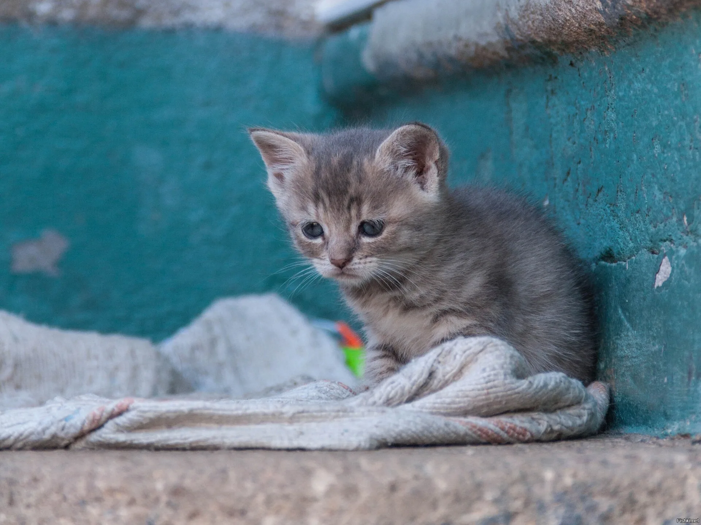

Яше было всего пять месяцев. Он не понимал, почему однажды утром дверь открылась, его посадили в холодный пластиковый контейнер, а потом поставили этот контейнер на асфальт у серой стены. Человек, пахнущий молоком и теплом, быстро пошел назад к подъезду. Яша рванул следом, путаясь в собственных лапах, но дверь захлопнулась прямо перед его розовым носом.